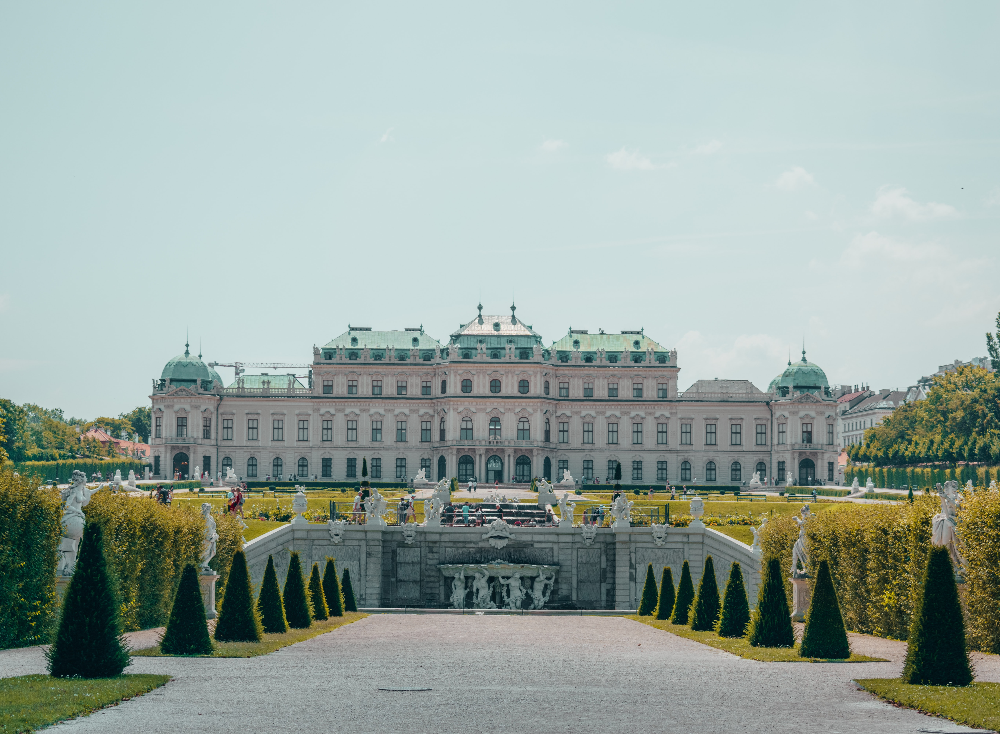
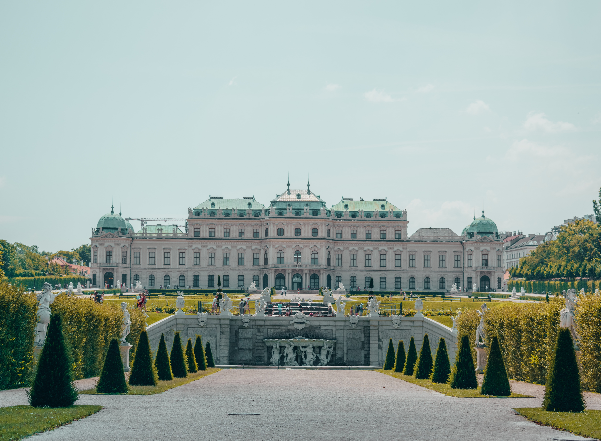

Landscapes of Austria
Travel Blog
Introduction
Austria is one of the most nature-rich places I have ever been able to visit. The lakes are a beautiful crystal clear blue surrounded by snow-capped mountains. Austria is also rich in history, which boasts medieval architecture. One of my favorite things that keep Austria unique from the rest of Europe is that there is almost no modern architecture. Most of the Austrian towns are small villages that reside at the base of mountains and are nestled in valleys. Austria is not without its big cities full of culture and museums.
Some of the pictures that I will show in this blog are from all facets of the country. The pictures will show you the wide-ranging landscapes of Austria and some history that resides there. One of the most visited cities in Austria is Salzburg, which is nestled right behind southern Germany's mountain range and the black forest. The most notable aspect of Salzburg was the cobblestone roads and the roadblocks that allowed pedestrians to walk freely to all of the wonderful museums and cafes.
Images
Salzburg
Vienna
 


Innsbruck


Graz